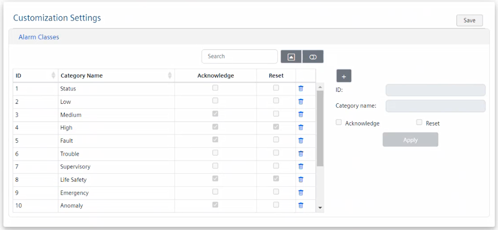
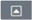
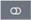
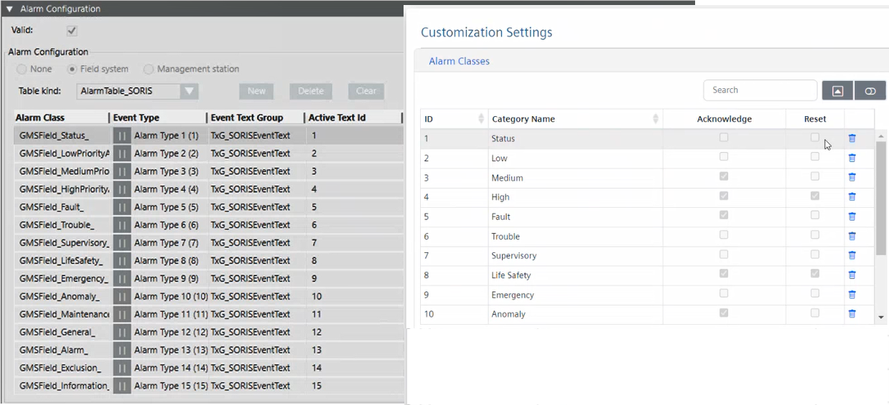

Customizing Alarm Classes

For security reasons, the OPC UA Client Adapter web client must run on the same computer where the adapter software was installed. For instructions, see Installing and Starting the OPC UA Client Adapter.

The alarm table custom configuration will be shared among all the OPC UA third-party servers that will connect to Desigo CC through the OPC UA client adapter.
In each configuration section of the OPC UA Client Adapter web client, an asterisk (*) indicates unsaved changes.
Since Desigo CC will not inform you of any OPC UA client unsaved data, before changing node selection in System Browser, make sure that you have saved the changes in the OPC UA Client Adapter web client, or your changes will be lost.
- You want to set a custom alarm table. For background information, see OPC UA Events.
- The OPC UA Client extension is installed and included in the active project. The following dependent extension is also included automatically: SORIS Driver.
- System Manager is in Engineering mode.
- System Browser is in Management View.
- The OPC UA Client Adapter web client displays on the screen. For instructions, see Access the OPC UA Web Client.
- In the Customization Settings section, click Alarm Classes.
- The Alarm Classes configuration area displays.

- To quickly find alarm classes in the table, do one or more of the following:
- In the Search field, enter the text you want to filter by.
- Click

Hide/Show pagination and at the bottom of the table select the number that corresponds to the table rows you want to display per page (8, 15, or All). In this way, table data is split over multiple pages, and you can use the page numbers to scroll the pages.
Note that the item selection is retained even after columns data sorting, while it resets if you go to a different page. - Click

Show card view to display data in cards. - To add new alarm class, do the following:
a. To add a new row, click .
b. Enter ID and Category name.
NOTE: The following characters are not allowed in any position within the Category name text:
- At sign (@)
- Equal sign (=)
- Plus sign (+)
- Minus sign (-)
c. Set the alarm commands (Acknowledge or Reset).
NOTE: The ID value must match the Active Text Id value in the alarm table configuration. In general, the new settings must match exactly the configuration of the customized alarm table in Desigo CC. 
- To modify an existing alarm class, do the following:
a. Select the row that corresponds to the alarm class you want to modify.
b. Adjust the settings (Category Name, Acknowledge, or Reset).
NOTE: ID is a unique value that cannot be modified. Furthermore, the alarm class customization settings must match exactly the configuration of the customized alarm table in Desigo CC. - To remove an alarm class, do the following:
a. Select the row that corresponds to the alarm class you want to remove.
b. Click . - Click Apply.
- To save the current configuration, in the Customization Settings section, click Save.
- If prompted to confirm the changes, click Yes.